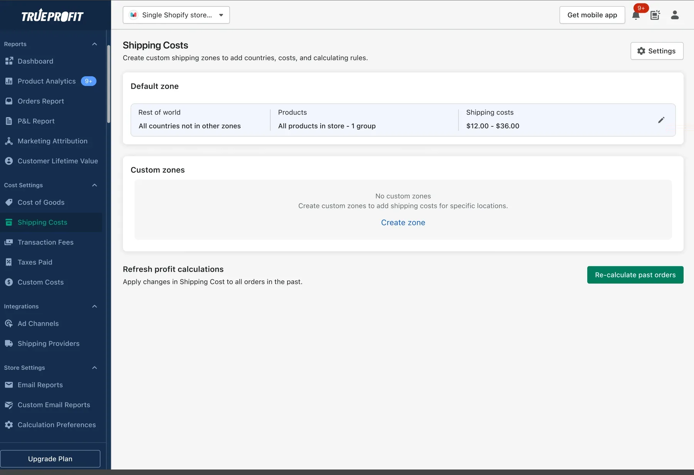
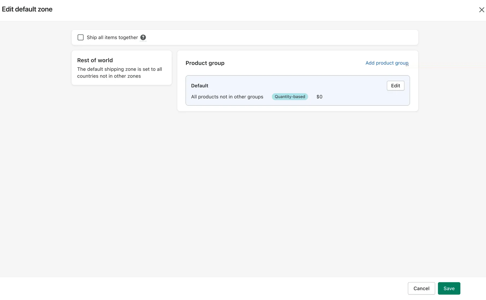
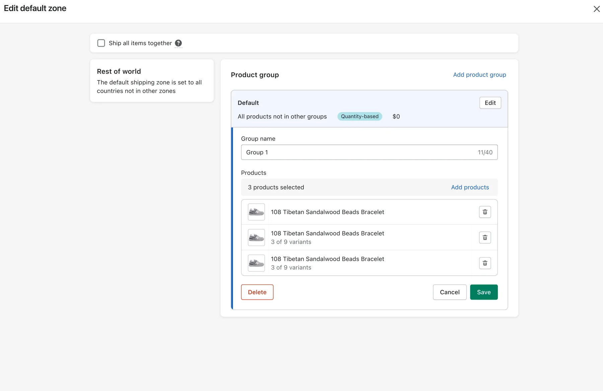
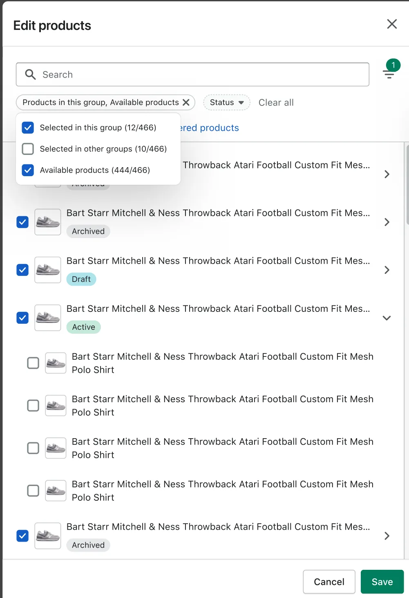
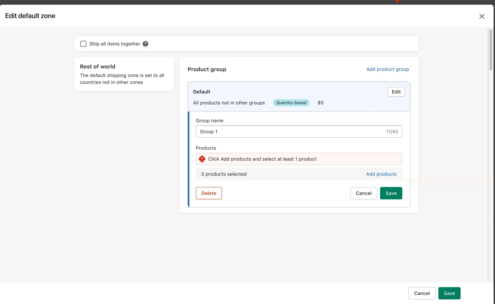
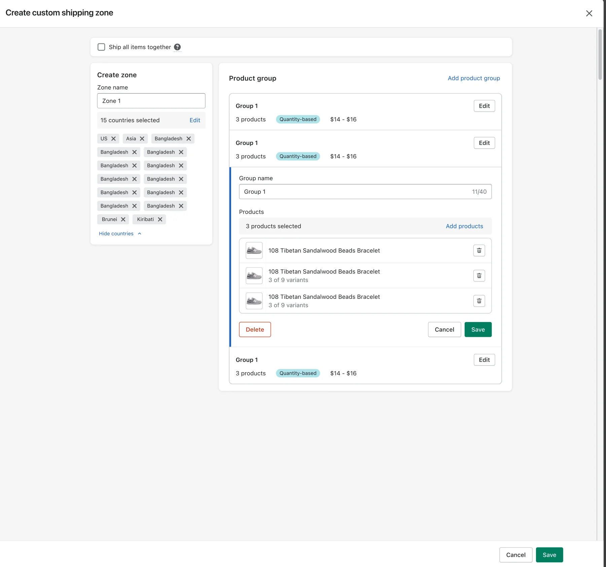
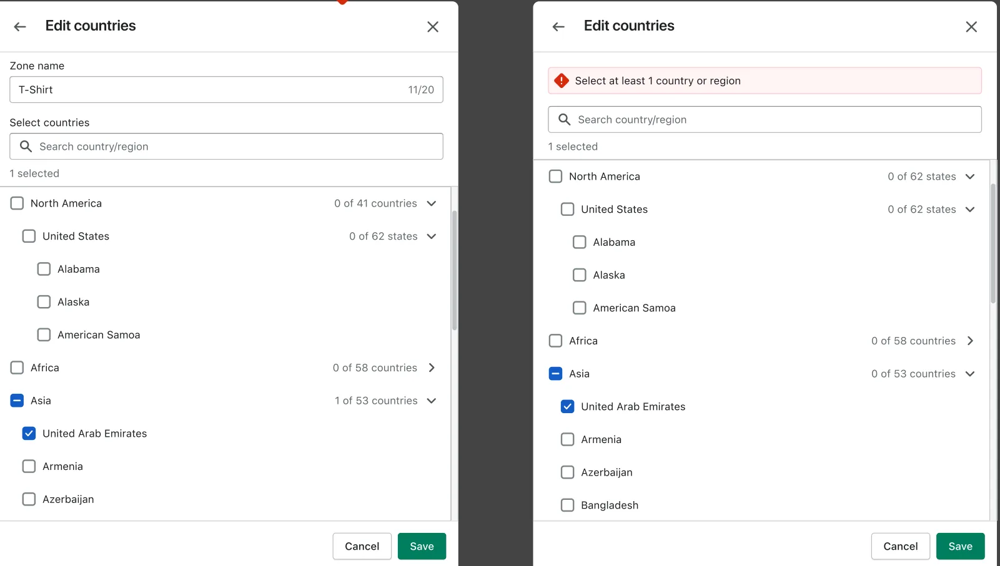
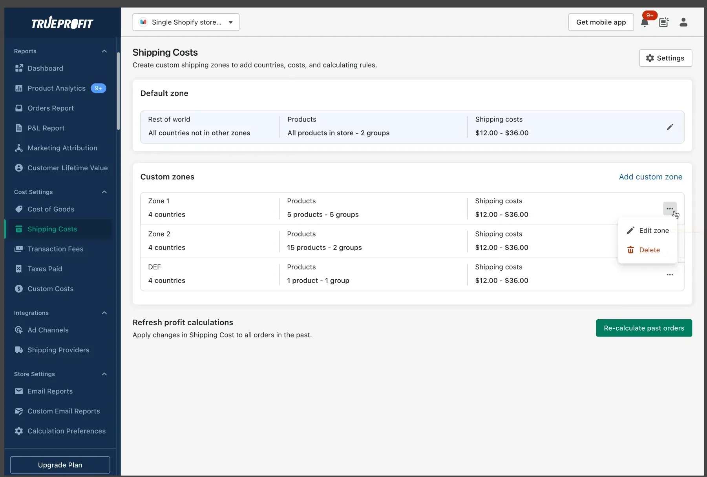
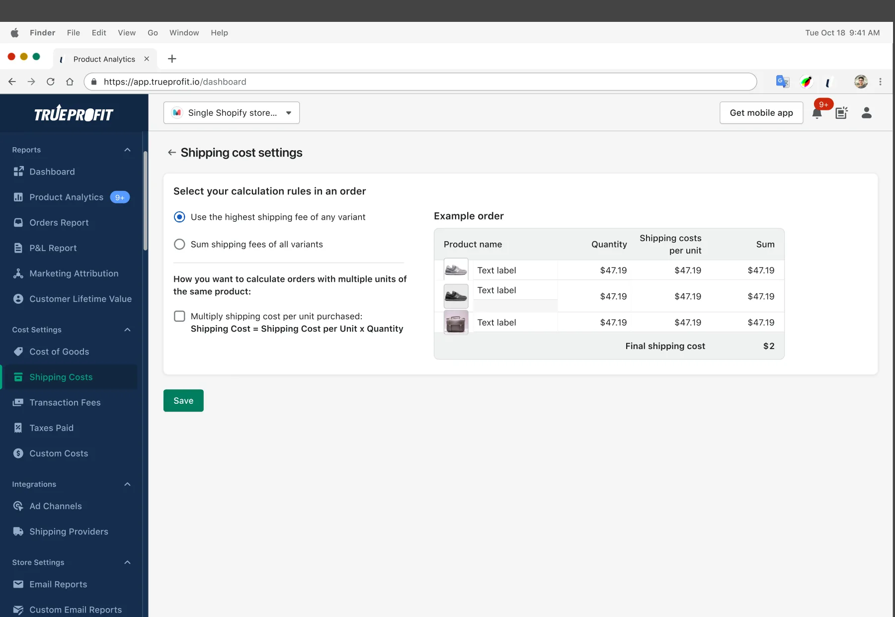

01Context
Profit is only as true as the costs behind it.
TrueProfit is a Shopify app that shows merchants their real net profit. Revenue minus ad spend, cost of goods, transaction fees, and shipping. It has over 13,500 installs and a 4.9 out of 5 rating.
Every number on the dashboard depends on the costs merchants enter in settings. If shipping cost is wrong, net profit is wrong. If net profit is wrong, the product has no reason to exist. So settings were not a back-office page. They were the foundation of trust.
I owned the redesign of the cost of goods (COGS) and shipping cost settings. This case focuses on shipping, the more complex of the two.
02The problem
The settings asked merchants to think like a database.
Real shipping is messy. A store might ship most products worldwide at one price, charge more for heavy items, and use different rates for a few countries. The old settings could handle all of that. The problem was how they asked for it.
Merchants had to start by creating a shipping profile, which is a set of products. Only then could they choose where those products ship and at what price. To set one special rate for one country, a merchant had to build a profile, pick products, add a zone, pick countries, and only then set a cost.
Merchants think “where do I ship, and what does it cost?” The old settings asked “which products?” first.
The cost showed up in three places. Setup took around 8 minutes. Support tickets about shipping kept coming. And free-trial merchants who couldn’t get accurate numbers had little reason to upgrade to a paid plan.
03Mapping the mess
Before simplifying anything, I drew every possible path.
I mapped every configuration a merchant could create in the old model. Four distinct cases came out, each a different combination of profile type and zone type.
Old modelCase 1
All products, worldwide, one price
Default profile → all products → worldwide → rule and cost.
Old modelCase 2
Some products, worldwide, one price
Custom profile → select products → worldwide → rule and cost.
Old modelCase 3
All products, several zones
Default profile → all products → custom zone → select countries → rule and cost.
Old modelCase 4
Some products, several zones, several prices
Custom profile → select products → custom zone → select countries → rule and cost.
Seeing them side by side made the issue obvious. Location appeared in every case, but it came last. Products came first, even though most stores charge the same for every product. The model was built around the exception, not the rule.
04The reframe
Flip the order: location first, products only when needed.
I rebuilt the model around shipping zones. Every store gets a default zone that covers “all countries not in other zones”. Inside a zone, products sit in groups. By default there is one group with every product in the store.
That means the most common setup, one price for everything everywhere, needs no product selection at all. Merchants add product groups only when prices differ. They add custom zones only when a country needs its own rate.
BeforeProduct-first
- Start by creating a profile, which is a list of products.
- Location is chosen inside each profile, so zones repeat across profiles.
- A single country exception means building a whole new profile.
- Four paths with up to five steps each.
AfterLocation-first
- Start from a default zone that already covers the world.
- Products live in groups inside a zone, with one group by default.
- A country exception is one custom zone with its own groups.
- Three paths, and the most common one has three steps.
05Designing the details
A simple model still needs guardrails.
A clean model on a diagram is only half the work. The other half is making every screen prevent mistakes instead of reporting them later. These are the key moments of the flow.





Rules that keep data clean
A zone must have at least one country and at least one product group. Merchants edit one group at a time, and it is validated before they can open another. Search and filters have their own empty states.




Two more details mattered for trust. Changes to shipping cost can be applied to past orders with one action, so historical profit stays consistent. And leaving the page with unsaved edits triggers a confirmation, so no one loses work by accident.
06Design system
Built on Shopify Polaris, so it feels native.
I built and maintained TrueProfit’s design system on top of Shopify Polaris. Merchants spend their day in Shopify admin. When an app uses the same patterns for modals, pickers and errors, there is nothing new to learn.
It also made engineering faster. The new settings used existing components with documented states, so we spent our time on logic and validation, not on pixels.
07Results
Fewer tickets, faster setup, more upgrades.
- Support tickets dropped by 83%. Fewer merchants needed help to finish setup.
- Setup time fell from 8 to 4.3 minutes. That is 46% faster.
- Free-to-paid conversion rose by 5%. Merchants who trust their numbers are more willing to pay for them.
For an app at $119.8K monthly recurring revenue, this one redesign helped both sides of the business. It lowered support cost and raised revenue.
08What I learned
Simple isn’t fewer features. It’s the right order.
We didn’t remove a single capability. Every case from the old model still works. What changed was the order of questions and the default answer. When the default fits most people, the complex cases stop getting in everyone else’s way.
I now start every settings problem the same way. Map every case, find the question users ask first, and make the most common answer the default.